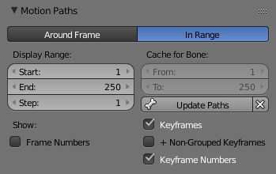

运动路径¶
参考
模式：物体模式
嵌板：
嵌板：
参考
模式： Pose Mode
嵌板：
嵌板：
菜单：
{kind=link}
这个功能可以将一个帧序列可视化为点的轨迹。这些点可以是物体的原点或骨骼的节点。
在我们查看它的选项前，让我们首先看看如何显示/隐藏这些轨迹。不同于 重影 ， 你必须手动更改，并且你需要首先选择想要显示和隐藏轨迹的骨骼。然后，
- 为了显示路径（或者更新它们），点击 Calculate Path 按钮。
- 为了隐藏路径，点击 Clear Paths 按钮。
Note
记住，这些动作仅仅影响被选择的骨骼和它们的路径！
路径中，未被选择的点被显示为灰色亮点，被选择的点被显示为稍微有些蓝色的点。在当前帧中，有一个箭头显示运动的方向：蓝色表示朝向未来帧，绿色表示朝向过去帧。每一帧在路径上被显示为小的白色点。
类似于鬼影，当你编辑姿态或关键帧时，这些路径会被自动更新，并且它们在动画播放是也处于活动状态。 Alt-A 仅仅在 Around Current Frame 被勾选时有效。
选项¶

在骨架设置中的运动路径嵌板。
- 类型
- 帧周围
- 显示当前帧附近固定个数帧的路径点。当你勾选这个按钮时，你当前帧附近给定个数帧的路径（类似于鬼影）。
- 区间
- 在指定范围内显示路径点。
- 显示范围
- 之前，之后
- 显示当前帧之前和之后的帧数目（仅用于 Around Current Frame 的洋葱皮方法）。
- 开始，结束
- 指定范围内用于显示或计算的开始和结束帧（不适用于 Around Current Frame 的洋葱皮方法）。
- 步数
- 类似于鬼影的 Step 方法。它允许你仅显示一帧路径中n个点。在你勾选显示帧数时（见下面）会很有用，避免在3D View中遮挡。
- 骨骼缓存
- 从，到
- 这些是绘制运动路径的范围的开始/结束帧。 不先删除运动路径，你不能修改此范围。
- 计算/更新路径
如果没有计算路径，计算路径将根据弹出菜单或操作员面板中指定的选项在缓存中创建一个新的运动路径。
如果已经计算了路径，则更新路径将更新当前动画的路径形状。 要更改计算路径的帧范围，你需要删除路径并重新计算。
- 开始，结束
- 这些是绘制运动路径的范围的开始/结束帧。 如果修改此设置，则必须再次计算路径，以更新3D视图中的路径。 请注意，与鬼影不同，起始帧是包容性的（即如果将开始设置为1，则将实际看到帧1作为路径的起点）。
- Bake Location
- 只适用于骨骼。默认情况下，你会获得提示路径。 通过将此设置更改为 Tails，你将获得骨骼根的路径（请记住，在Blender UI中，骨骼的根被称为
头...）。 如果修改此设置，则必须再次计算路径，以更新3D视图中的路径。
- 清除路径
X - 清除所有对象/骨骼上的路径，或者在按住
Shift时清除所选对象的路径。
显示¶
- 帧数
- 启用后，路径上每个帧点旁边会显示一个小数字，这当然是相应帧的编号。
- 帧数
- 当启用时，在运动路径上绘制大的黄色正方形点，显示其骨骼的关键帧（即，仅在给定帧处的键盘的路径在该帧处获得黄点）。
- + Non-Grouped 关键帧
- 对于骨骼运动路径，它将搜索整个动作中的关键帧，而不是仅使用匹配名称的组（较慢）。
- 关键帧数
- 启用后，你将看到所显示的关键帧数，因此显示密钥启用时，此选项显然仅有效。
例子¶
骨架运动路径的例子。